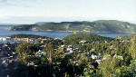
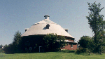
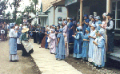
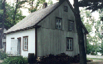
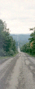
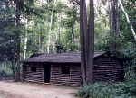

|

Tadoussac, à l'embouchure du fjord du Saguenay, vu
du camping.
|
Il fait enfin beau, nous avons
des voisins charmants et le moral est toujours au beau fixe
!
Demain baleines ? ou fjord ? Nous
optons pour fjord, les "expéditions baleines"
ressemblant trop à des pièges à
touristes !
|
|
|
Le fjord du Saguenay , 240 m de profondeur en
moyenne, le plus méridional du monde !
Nous avons eu un temps magnifique et quelques
belugas étaient au rendez-vous, mais trop loin et
trop rares pour être dérangés et
photographiés.
|
|

|
En Estrie, à Mansonville, une des
dernières granges rondes.
Conçue pas les Shakers, secte issue des
Quakers , sa forme ronde avait l'avantage de ne
présenter aucun coin où le diable aurait pu se
cacher...
|
|

La chorale

Une maison de bois
|
En Estrie, Drummondville, le Village
d'antan, témoin vivant d'un passé riche et
attachant.
Nous avons assisté à un mariage et
vu exercer les différents corps de métier qui
existaient à l'époque.
Les acteurs de cette reconstitution sont
géniaux ! Un naturel qui nous renvoie plus de 100 ans
en arrière !
|
|

Une route en Estrie ... Ligne droite à
perte de vue, forêts variées et pas une voiture
en vue.
|
La cabane du trapeur en rondins

|